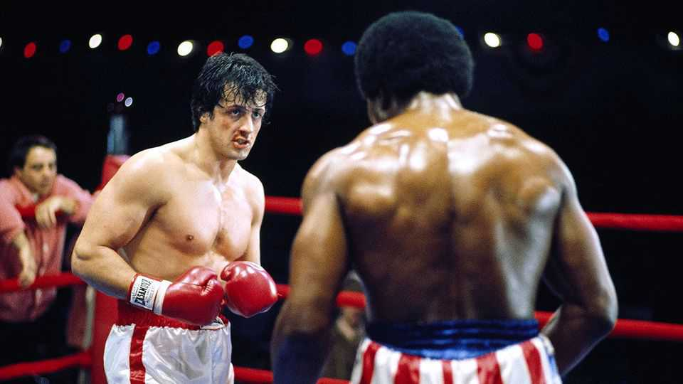

At 50, “Rocky” isn’t as good as you remember. It’s better
Why Sylvester Stallone’s boxing parable is about more than the violent sport

Nov 12th 2026
The car starts flying over halfway through “Chitty Chitty Bang Bang”. “Jaws” is very funny. Classic films are often misremembered, reduced to striking moments or motifs. Such has been the fate of “Rocky”, released 50 years ago in November 1976. Sylvester Stallone’s knockout hit is not, in fact, a punchy fantasy about a fighter realising his dream. It is a great American movie because it honours dreams like Rocky’s yet sees that they can be chimerical.
Half a century has shrouded “Rocky” in myth. Among film fans, the legend of how it was made has blurred with its plot. This fable is retold for the anniversary in “The Steps”, Mr Stallone’s moving new memoir, and the warm tribute film “I Play Rocky”, out now, in which Anthony Ippolito plays the star in the 1970s. In his book Mr Stallone evokes his dismal upbringing, his knock-backs as a young actor in New York and his gruelling day jobs: cutting fish in a deli, cleaning out lion cages at the zoo and as an usher in a cinema. He taped the dialogue to study in his flophouse room.
When Mr Stallone wrote the screenplay for “Rocky”, avowedly in three days, his wife was pregnant and he was broke. Still, in a quixotic negotiation that is the entertaining heart of “I Play Rocky”, he turned down astronomical offers for it, insisting that he—rather than, say, Burt Reynolds—must play the lead. A tiny budget meant the crowd in the arena in the finale was largely made up of homeless people and psychiatric patients. This origin story culminates in a poleaxed Mr Stallone, sporting lavish lapels, collecting the Oscar for Best Picture.
Thus did a dauntless underdog fight and triumph. The film itself is more nuanced. Take the fighting part first. “I Play Rocky” raises a laugh when a pretentious character insists “Rocky” isn’t a boxing movie but just “happens to have boxing in it”. (In another good in-joke, a producer is doubtful about the immortal horn music.) Actually, he is right.
Cultural memory is unreliable. Increasingly silly sequels, in which Rocky pummels Mr T and the Soviets, appealed to febrile schoolboys but made the franchise seem much more wallopy than it started out. Mr Stallone’s subsequent career as an action hero likewise skewed perceptions. In “Rocky” he fights only twice, briefly at the opening and again at the end. Both bouts are ugly. “You gotta be a moron to want to be a fighter,” he says.
As for the triumph: don’t forget that Rocky’s dream is not to be world champion, but simply to prove to himself he isn’t “just another bum from the neighbourhood”. That, and to win the love of Adrian, his shy girlfriend. The real climax is when, in the fight of his life, he is flattened by Apollo Creed, the preening champ; urged to “stay down” by his corner, he staggers to his feet. In “The Steps”, Mr Stallone calls the film “a love story about regular people looking for dignity and respect”.
Its deep theme is being poor in America, a subject he knew from the inside—just as, from childhood, he knew the meaner streets of Philadelphia where “Rocky” is set. (He bristled at a bid to shoot it in Beverly Hills.) Rocky’s shabby leather jacket was Mr Stallone’s; he, too, once subsisted on raw eggs. In a telling moment, Rocky gives his card to a promoter’s secretary, then asks for it back. Later Adrian’s hat falls off as she rushes to embrace him in the ring. “Where’s your hat?” Rocky asks in almost the last line. He’d hate for her to lose it.
And the thing about Rocky’s character arc is that, like his match with Creed, it could go the other way. Working as a loan shark’s enforcer, he almost commits a vicious assault. Feeling disrespected, he berates his wily trainer before teaming up with him. You worry he might come on a bit too strong to Adrian.
The bleaker tale inside Rocky’s unfolds in a minor key. The protagonist of this shadow movie is Paulie, Adrian’s brother, who works in a meatpacking freezer, insulating himself with liquor. “I can’t haul meat no more,” he rages. Paulie has a dream, or rather several. He is always looking for an angle, claiming to understand pR, or marketing, or boxing. When a deus ex machina in the form of Creed gives Rocky his shot, he—like Mr Stallone—doesn’t waste it. But the film shows that some people never get one.
A fairy tale that knows it’s a fairy tale, “Rocky” isn’t as good as you remember: it’s better. Its greatness is captured in a perfectly paced exchange between Rocky and the promoter. “Do you believe that America is the land of opportunity?” the bigshot asks the bruised man in fingerless gloves. Rocky hesitates, just for a second, and says, “Yeah.” ■